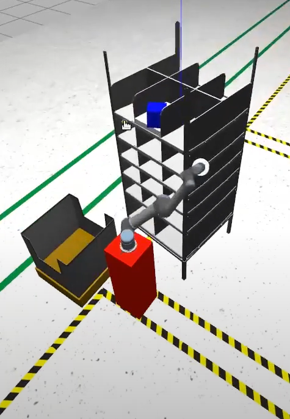
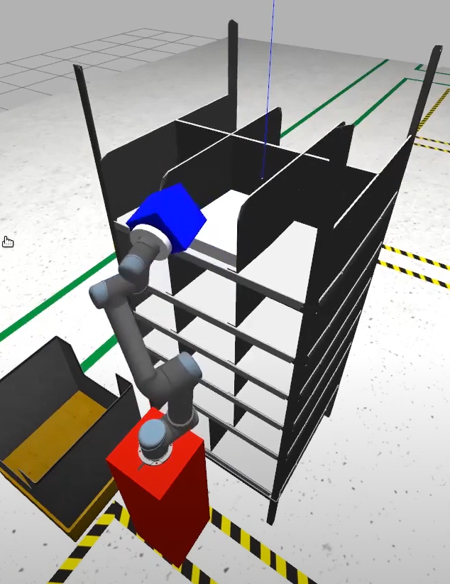

Grading Criteria
- In Task-5,
90%of your marks will depend on the run score and10%of the marks will depend on documentation.
Run Score
The team’s total score is calculated based on the following formula: $$ Score = [\sum_{i=1}^9 (WOP * ( CIP + OR + UR51P+UR5S + UR5E + UR52P+ DT - (n*PC ) ) ) ] + [ DSH - (n * UR5C) ] $$
The values of the parameters can be found in Table-1 given below.
WOP: Weight of the packages with varying priorities, these are defined in Table 1
OR: Order has been received via MQTT Protocol and the Inventory Sheet has been updated
CIP: Score for Camera#1 identifying the packages stored on the shelf.
UR51P: Score awarded for the UR5#1 Arm to pick the package from the shelf and place it onto the conveyor belt following the correct priority order and with no collision.
UR5S: Score awarded as Inventory Management Sheet has been updated, this score will be inclusive of the following operations:
- UR5#1 picking up the object and placing it on the conveyor belt
- UR5#2 places the package from the conveyor belt into the color corresponding bin.
UR5E: Score awarded as an email alert will be sent to the customer from the warehouse, this score will be inclusive of the following operations:
- Email sent to the customer when UR5#1 places the package on the conveyor belt
- Email sent to the customer as the package was placed by the UR5#2 Arm in the correct color corresponding bin.
UR52P: Score awarded for the UR5#2 Arm to pick the package from the conveyor belt and place it into the correct color corresponding bin with no collision.
DT: Score awarded for Delivery Time. This is calculated as:
DT = 200 * ( (500 -
sim_time) / 500 ), where Simulation Time = Real-Time Factor * Real-Time
sim_time= (Time at which package is sorted byUR5#2) - (Time at which order for that package is placed)
n*PC: Packages collision during pick- place operation
-
n : Number of collisions
-
PC : Multiplying factor for packages collisions = 20
DSH: Score awarded for creating a dynamic dashboard interface which can update in real-time while the run is going on.
n*UR5C: UR5 Arm collisions when packages are not handled
-
UR5C : Multiplying factor for UR5 Arm collisions = 20
-
n : Number of collisions
| Scoring Parameter | Values |
| WOP (High Priority) | 4 |
| WOP (Medium Priority) | 2 |
| WOP (Low Priority) | 1 |
| CIP | 50 |
| OR | 20 |
| UR51P | 100 |
| UR5E | 40 |
| UR5S | 40 |
| UR52P | 100 |
| DSH | 50 |
Penalties
| Type of Penalty | Image |
|---|---|
| 1. If any of the models in the Gazebo environment are colliding with each other it will be considered as a collision penalty. |  |
| 2. If the package picked by the UR5 Arms is violently vibrating while being dragged from one position to another it will be considered a collision penalty. |  |
Self-Grading Script
-
You download and use this
python2script to calculate your Task-5 score according to your own evaluation.
Example
- In the above output:
- When Camera#1 identifies the packages the
Inventorysheet is updated, 50 points are awarded for each each package identified by Camera#1 - Once the warehouse starts receiving orders via the ROS-IoT Bridge the
IncomingOrderssheet should be updated, 20 points are awarded for each package order updated in the Google Spreadsheet - Once UR5#1 starts picking up the packages and placing it on the conveyor as per their priority and order, the
OrdersDispatchedsheet must be updated, 100 points are awarded per package for the UR5#1 Arm to pick the package from the shelf and placing it on the conveyor belt - Once UR5#2 starts picking up the packages and placing it into color corresponding bins, the
OrdersShippedsheet must be updated, 100 points are awarded per package for the UR5#2 Arm to pick the package from the conveyor and sorting into the color corresponding bins - 40 points are awarded per package for updating the
OrdersDispatchedandOrdersShippedGoogle Spreadsheets as seen in the expected video - 40 points are awarded per package for sending the customer email notification about the package status as seen in the expected video using Google Apps Scripting
- In the expected video, the
Time Takenby the package is being considered to calculate simulation time.- Note - Please note the time shown in the video is in real time however we will be considering only simulation time.
- In the video the time taken for the first package is 74 seconds, so as per the scoring guidelines, Package Distribution time for the first package will be
DT= 200 * ((500-74)/500) = 170.4 ~ 170 seconds
- The dynamic dashboard interface shown in the video is an example, teams can design as per their choice. 50 points will be awarded for the dashboard interface
- 20 points will be deducted for the number of package collisions, as seen in the expected video there are no package collisions so in this case there are no points deducted as per the scoring formula
- 20 points will be deducted for the number of UR5 Arm collisions with any other models, as seen in the expected video there are no arm collisions so in this case there are no points deducted as per the scoring formula
- When Camera#1 identifies the packages the
- Using the Self-Grading Script the score for this run comes out to be
88.28 %
ruchi@ruchi-dell-g3-3500:~$ python t5_self_eval.py
##################################################################################
For Package 1
1. Is the 2D Camera able to identify Package 1 ? (y/n) ->y
2. Are you able to view and update the Incoming Orders status for Package 1 ? (y/n) ->y
3. Is your UR5#1 able to pick the Package 1 from the shelf and place it on the conveyor? (y/n) -> y
4. Is your UR5#2 able to pick the Package 1 from the conveyor belt and segregate it into colour corresponding bins?(y/n) -> y
5. Are you able to update the status of Package 1 in the Orders Dispatch and Orders Shipped Spreadsheets? (y/n) -> y
6. Are you able to send Dispatch and Shipped status of Package 1 emails to the customer? (y/n) ->y
7. Total Number of collisions for Package 1 ? (0 or +ve integer) ->0
8. What is your simulation time for Package 1 (+ve integer) -> 74
9. What is the type of Package 1: HP, MP, LP -> LP
##################################################################################
For Package 2
1. Is the 2D Camera able to identify Package 2 ? (y/n) ->y
2. Are you able to view and update the Incoming Orders status for Package 2 ? (y/n) ->y
3. Is your UR5#1 able to pick the Package 2 from the shelf and place it on the conveyor? (y/n) -> y
4. Is your UR5#2 able to pick the Package 2 from the conveyor belt and segregate it into colour corresponding bins?(y/n) -> y
5. Are you able to update the status of Package 2 in the Orders Dispatch and Orders Shipped Spreadsheets? (y/n) -> y
6. Are you able to send Dispatch and Shipped status of Package 2 emails to the customer? (y/n) ->y
7. Total Number of collisions for Package 2 ? (0 or +ve integer) ->0
8. What is your simulation time for Package 2 (+ve integer) -> 115
9. What is the type of Package 2: HP, MP, LP -> HP
##################################################################################
For Package 3
1. Is the 2D Camera able to identify Package 3 ? (y/n) ->y
2. Are you able to view and update the Incoming Orders status for Package 3 ? (y/n) ->y
3. Is your UR5#1 able to pick the Package 3 from the shelf and place it on the conveyor? (y/n) -> y
4. Is your UR5#2 able to pick the Package 3 from the conveyor belt and segregate it into colour corresponding bins?(y/n) -> y
5. Are you able to update the status of Package 3 in the Orders Dispatch and Orders Shipped Spreadsheets? (y/n) -> y
6. Are you able to send Dispatch and Shipped status of Package 3 emails to the customer? (y/n) ->y
7. Total Number of collisions for Package 3 ? (0 or +ve integer) ->0
8. What is your simulation time for Package 3 (+ve integer) -> 160
9. What is the type of Package 3: HP, MP, LP -> MP
##################################################################################
For Package 4
1. Is the 2D Camera able to identify Package 4 ? (y/n) ->y
2. Are you able to view and update the Incoming Orders status for Package 4 ? (y/n) ->y
3. Is your UR5#1 able to pick the Package 4 from the shelf and place it on the conveyor? (y/n) -> y
4. Is your UR5#2 able to pick the Package 4 from the conveyor belt and segregate it into colour corresponding bins?(y/n) -> y
5. Are you able to update the status of Package 4 in the Orders Dispatch and Orders Shipped Spreadsheets? (y/n) -> y
6. Are you able to send Dispatch and Shipped status of Package 4 emails to the customer? (y/n) ->y
7. Total Number of collisions for Package 4 ? (0 or +ve integer) ->0
8. What is your simulation time for Package 4 (+ve integer) -> 157
9. What is the type of Package 4: HP, MP, LP -> MP
##################################################################################
For Package 5
1. Is the 2D Camera able to identify Package 5 ? (y/n) ->y
2. Are you able to view and update the Incoming Orders status for Package 5 ? (y/n) ->y
3. Is your UR5#1 able to pick the Package 5 from the shelf and place it on the conveyor? (y/n) -> y
4. Is your UR5#2 able to pick the Package 5 from the conveyor belt and segregate it into colour corresponding bins?(y/n) -> y
5. Are you able to update the status of Package 5 in the Orders Dispatch and Orders Shipped Spreadsheets? (y/n) -> y
6. Are you able to send Dispatch and Shipped status of Package 5 emails to the customer? (y/n) ->y
7. Total Number of collisions for Package 5 ? (0 or +ve integer) ->0
8. What is your simulation time for Package 5 (+ve integer) -> 219
9. What is the type of Package 5: HP, MP, LP -> LP
##################################################################################
For Package 6
1. Is the 2D Camera able to identify Package 6 ? (y/n) ->y
2. Are you able to view and update the Incoming Orders status for Package 6 ? (y/n) ->y
3. Is your UR5#1 able to pick the Package 6 from the shelf and place it on the conveyor? (y/n) -> y
4. Is your UR5#2 able to pick the Package 6 from the conveyor belt and segregate it into colour corresponding bins?(y/n) -> y
5. Are you able to update the status of Package 6 in the Orders Dispatch and Orders Shipped Spreadsheets? (y/n) -> y
6. Are you able to send Dispatch and Shipped status of Package 6 emails to the customer? (y/n) ->y
7. Total Number of collisions for Package 6 ? (0 or +ve integer) ->0
8. What is your simulation time for Package 6 (+ve integer) -> 280
9. What is the type of Package 6: HP, MP, LP -> HP
##################################################################################
For Package 7
1. Is the 2D Camera able to identify Package 7 ? (y/n) ->y
2. Are you able to view and update the Incoming Orders status for Package 7 ? (y/n) ->y
3. Is your UR5#1 able to pick the Package 7 from the shelf and place it on the conveyor? (y/n) -> y
4. Is your UR5#2 able to pick the Package 7 from the conveyor belt and segregate it into colour corresponding bins?(y/n) -> y
5. Are you able to update the status of Package 7 in the Orders Dispatch and Orders Shipped Spreadsheets? (y/n) -> y
6. Are you able to send Dispatch and Shipped status of Package 7 emails to the customer? (y/n) ->y
7. Total Number of collisions for Package 7 ? (0 or +ve integer) ->0
8. What is your simulation time for Package 7 (+ve integer) -> 316
9. What is the type of Package 7: HP, MP, LP -> LP
##################################################################################
For Package 8
1. Is the 2D Camera able to identify Package 8 ? (y/n) ->y
2. Are you able to view and update the Incoming Orders status for Package 8 ? (y/n) ->y
3. Is your UR5#1 able to pick the Package 8 from the shelf and place it on the conveyor? (y/n) -> y
4. Is your UR5#2 able to pick the Package 8 from the conveyor belt and segregate it into colour corresponding bins?(y/n) -> y
5. Are you able to update the status of Package 8 in the Orders Dispatch and Orders Shipped Spreadsheets? (y/n) -> y
6. Are you able to send Dispatch and Shipped status of Package 8 emails to the customer? (y/n) ->y
7. Total Number of collisions for Package 8 ? (0 or +ve integer) ->0
8. What is your simulation time for Package 8 (+ve integer) -> 382
9. What is the type of Package 8: HP, MP, LP -> HP
##################################################################################
For Package 9
1. Is the 2D Camera able to identify Package 9 ? (y/n) ->y
2. Are you able to view and update the Incoming Orders status for Package 9 ? (y/n) ->y
3. Is your UR5#1 able to pick the Package 9 from the shelf and place it on the conveyor? (y/n) -> y
4. Is your UR5#2 able to pick the Package 9 from the conveyor belt and segregate it into colour corresponding bins?(y/n) -> y
5. Are you able to update the status of Package 9 in the Orders Dispatch and Orders Shipped Spreadsheets? (y/n) -> y
6. Are you able to send Dispatch and Shipped status of Package 9 emails to the customer? (y/n) ->y
7. Total Number of collisions for Package 9 ? (0 or +ve integer) ->0
8. What is your simulation time for Package 9 (+ve integer) -> 447
9. What is the type of Package 9: HP, MP, LP -> HP
##################################################################################
Are you able to build a dynamic dashboard interface to show the inventory processes (y/n) ->y
##################################################################################
Total number of UR5 collisions with other models? (0 or +ve integer) -> 0
##################################################################################
Task-5 Self-Eval Score: 88.2844827586
Documentation Marks
- A total of 100 points will be given for proper documentation and for following coding standards.
- Out of these 100 points, 90 points is reserved for documentation and 10 points will be from average pylint score of your python scripts.
10%of these points will be added to your total marks.